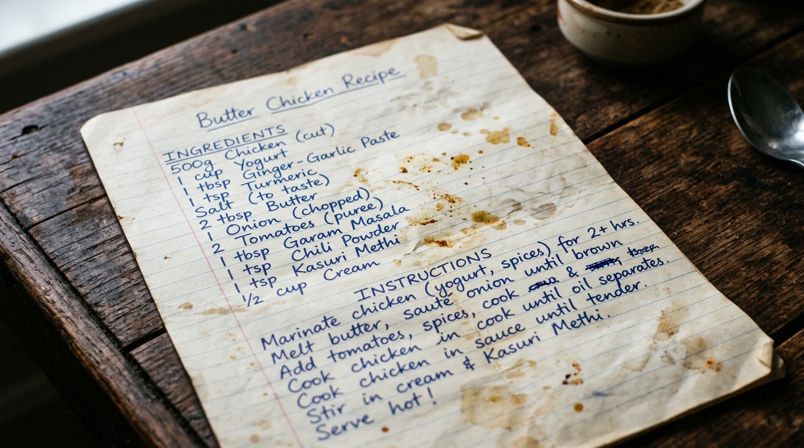

Total Retained Corpus
18,324 +3.8% MoM
Primary Metric Drop-Off
ARR
(54.2%)
(54.2%)
Global Abandonment Rate
41.6% Critical
Top Ranked Opportunity Google PD
Episodic Inversion (ELI)
Opportunity Prioritization Matrix NOI Ranked
TRIAGE AXIS:
All Archetypes (5)
ARR Stage (2)
OER Stage (1)
ELI Stage (1)
| # | Failure Archetype | Asset Class | Drop Stage | Freq (%) | Sev (1-5) | Aband (%) |
|---|---|---|---|---|---|---|
| #1 |
Episodic-to-Literal Inversion (ELI)
Semantic polarity disconnect
|
Episodic/Life Event | ARR_unresolved | 38.4% | 4.2 | 78.0% |
| #2 |
OCR-Semantic Disconnect (OSD)
Visual text vs image intent
|
Utilitarian/Doc | ARR_unresolved | 27.2% | 3.9 | 64.0% |
| #3 |
Brittle Spatio-Temporal (BSTA)
Fuzzy relativity failure
|
Episodic/Life Event | QER_unexpressed | 18.6% | 3.4 | 52.0% |
| #4 |
Visual Overload / Flooding (VOCF)
High recall zero precision
|
Aesthetic/Wall | ELI_fatigue | 10.5% | 2.8 | 38.0% |
| #5 |
Dead End (ZFIDE)
Null search without guidance
|
Screenshot/Info | POS_abandoned | 5.3% | 4.6 | 91.0% |
● RAG AGENT > Instruct agent (e.g., 'Pinpoint multimodal drift across Q3 2022 image embeddings')...
SPU EMBED VRAM: 7.4 / 16 GB
Retrieval Semantic Gap: Memory Encoding vs Query Formulation
N = 8,420 Analyzed Sessions
What Users Mentally Encode
What Users Actually Search Box Query
The Inversion Paradox
Users anchor episodic memories in affective cues, but formulate search queries exclusively in physical nouns. Current embeddings over-index on literal object detection (e.g., food tags) while dropping relational context.
Ground-Truth Evidence Inspector
Target: #1 ELI
Confirmed
(17,260)
(17,260)
Pending Review
(820)
(820)
Mismatch
(244)
(244)
Stage 3 Sonnet Confirmed
Verbatim User Friction Report
"I spent 45 minutes searching for the handwritten butter chicken recipe my mom sent on WhatsApp during Diwali two years ago. Typed 'recipe', 'chicken', 'note', scrolled until my eyes hurt and gave up."

Ground Truth Target: WhatsApp_IMG_20221024_RECIPE.jpeg
Extracted Cognitive Dimensions
Execution Diagnostics
Engine Blind
Engine indexed food photos; failed to connect religious holiday anchor to handwritten card.
Session Duration
45 Minutes
Infinite Scroll
Frustration Rating
5.0/5.0 !
Session Rage-Quit
Context Window: 128k Tokens
Execute RAG Query ▾